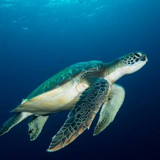
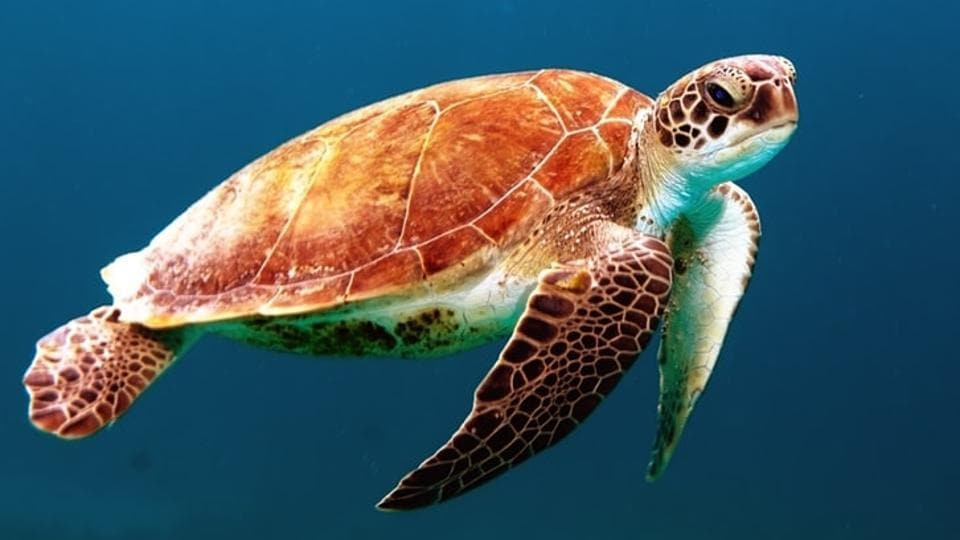
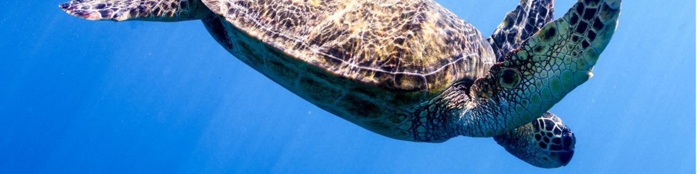

About Us
We are a non-profit organization dedicated to protecting Sri Lanka's sea turtles and their habitats. Our team of volunteers works tirelessly to monitor nesting sites, rescue injured turtles, and educate the public about the importance of conservation.
Turtle Species
Sri Lanka is home to five species of sea turtles: the Green Turtle, the Loggerhead Turtle, the Hawksbill Turtle, the Olive Ridley Turtle, and the Leatherback Turtle. Each of these species has unique characteristics and behaviors.
Conservation
Conservation efforts are crucial to protect Sri Lanka's sea turtles. We work with local communities, government agencies, and other organizations to promote sustainable fishing practices, reduce pollution, and protect nesting sites.
Our Mission
- Protect and conserve Sri Lanka's sea turtles and their habitats
- Monitor nesting sites and rescue injured turtles
- Educate the public about the importance of conservation
- Promote sustainable fishing practices and reduce pollution
Volunteer with Us
- Apply to become a volunteer on our website
- Attend a volunteer training session
- Participate in beach cleanups and monitoring activities
Steps to Help Protect Sri Lankan Turtles
- Reduce your use of single-use plastics, such as straws and shopping bags.
- Participate in beach clean-up efforts to remove trash and debris that can harm turtles.
- Use only certified turtle-friendly lighting on or near the beach during nesting season to avoid disorienting hatchlings.
- Support conservation efforts by donating to reputable organizations or volunteering your time.
- Spread awareness by educating others about the importance of protecting Sri Lankan turtles.
Conservation Efforts
Here are some of the conservation efforts being made in Sri Lanka:
- Protecting turtle nesting sites by building hatcheries
- Enforcing fishing regulations to prevent accidental turtle deaths
- Increasing public awareness about the importance of turtle conservation
Turtle Categories
Here are some of the turtle categories you can find in Sri Lanka:
+Turtle Name Location Image Green Turtle Rekawa Beach, Kosgoda Beach 
Hawksbill Turtle Induruwa Beach, Bentota Beach 
Olive Ridley Turtle Gandara Beach, Kahawa Beach  Data source: Sri Lanka Sea Turtle Conservation Project Conservation Efforts
Here are some of the conservation efforts being made in Sri Lanka:
- Protecting turtle nesting sites by building hatcheries
- Enforcing fishing regulations to prevent accidental turtle deaths
- Increasing public awareness about the importance of turtle conservation
Join Us in Protecting Sri Lanka's Turtles
Together, we can ensure the survival of these amazing creatures. Learn more about how you can help by visiting our Get Involved page.
